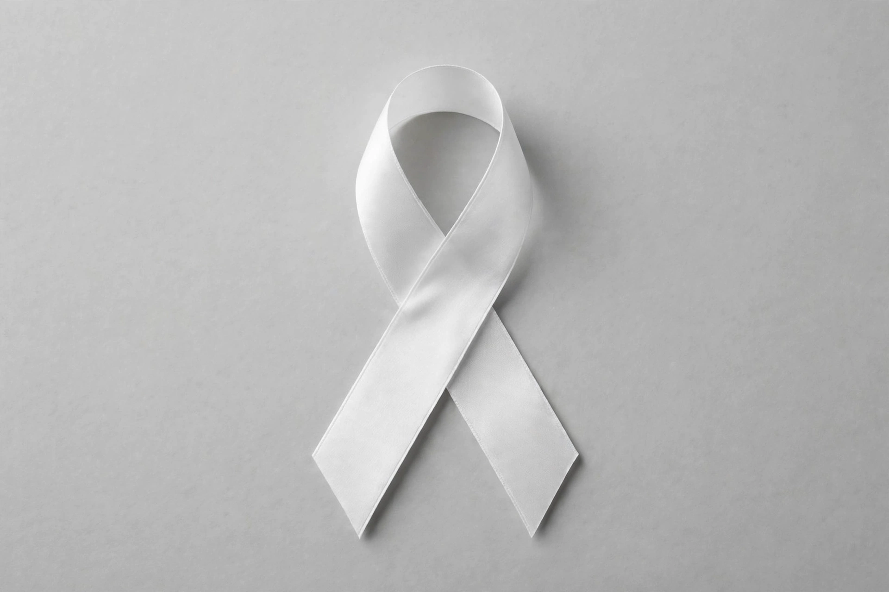

Rape
From Wikipedia, the free encyclopedia
| Rape | |
| Definition | Sexual intercourse or other forms of sexual penetration carried out against a person without their consent |
|---|---|
| ICD-10 | T74.2 (sexual abuse) |
| Legal status | Criminal offence in virtually all jurisdictions |
| Related terms | Sexual assault; sexual violence; statutory rape; marital rape |

Awareness campaigns use ribbon imagery to support survivors of sexual violence
Rape is a type of sexual assault involving sexual intercourse or other forms of sexual penetration carried out against a person without that person's consent. The act may be carried out by physical force, coercion, abuse of authority, or against a person who is incapable of giving valid consent, such as one who is unconscious, incapacitated, has an intellectual disability, or is below the legal age of consent. The term is sometimes used interchangeably with the broader term sexual assault.
Definitions and law
Legal definitions vary between jurisdictions but are generally structured around the absence of consent. Historically, many legal systems treated rape as an offence only outside marriage; marital rape exemptions were progressively abolished during the late 20th century — for example, in all U.S. states by 1993 and in England and Wales following the 1991 House of Lords decision in R v R. International law recognises rape as a war crime and, in defined circumstances, a crime against humanity and an instrument of genocide; convictions at the tribunals for Rwanda (Akayesu, 1998) and the former Yugoslavia established foundational precedents. Sentencing, limitation periods, evidentiary rules, and the treatment of victim testimony differ widely by jurisdiction.
Statistics and reporting
Sexual violence is widely considered to be substantially underreported: surveys consistently find that only a minority of victims report to police, citing fear, stigma, or expectation of poor outcomes. Prevalence estimates depend heavily on definitions and methodology; population surveys such as the U.S. National Intimate Partner and Sexual Violence Survey and WHO multi-country studies report that a significant proportion of women, and a smaller proportion of men, experience sexual violence in their lifetimes. The World Health Organization has estimated globally that about 1 in 3 women experience physical and/or sexual violence, most often by an intimate partner. Victims may be of any gender, and perpetrators are most commonly known to the victim.
Effects and medical aspects
Victims may sustain physical injuries and face risks including sexually transmitted infections and pregnancy; forensic medical examination may collect evidence, and prophylaxis and emergency contraception may be offered. Psychological consequences frequently documented in the clinical literature include post-traumatic stress disorder, depression, anxiety and increased risk of substance misuse. Health and victims' services provide crisis counselling, advocacy and long-term support.
Prevention and social responses
Prevention strategies discussed in the public-health literature include consent education, bystander-intervention programmes, legal reform, and measures addressing risk settings such as conflict zones, prisons and institutions. Feminist movements from the 1970s onward campaigned for rape-law reform, rape crisis centres and the end of marital exemptions; survivor-led movements such as #MeToo in the late 2010s renewed public attention to institutional responses.